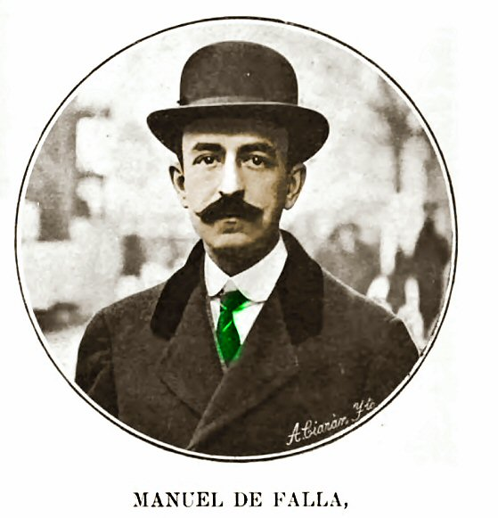
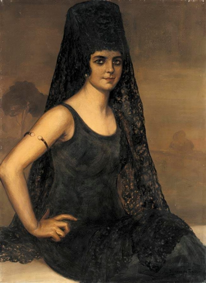
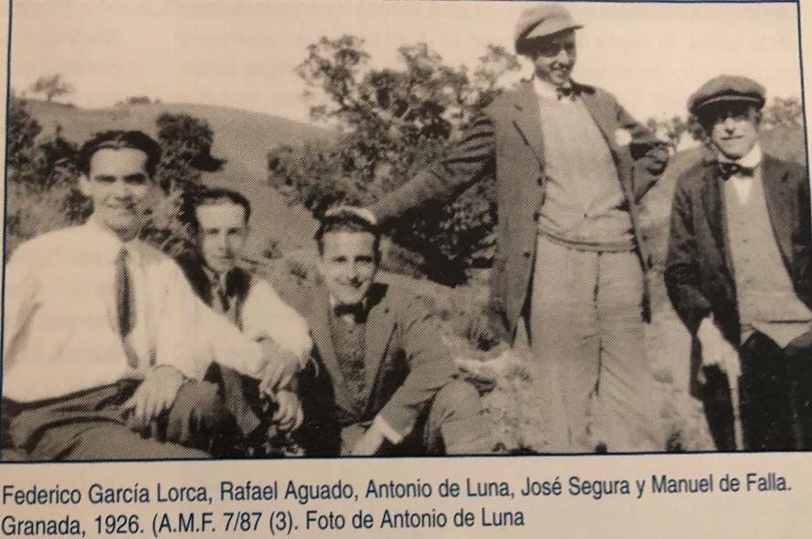
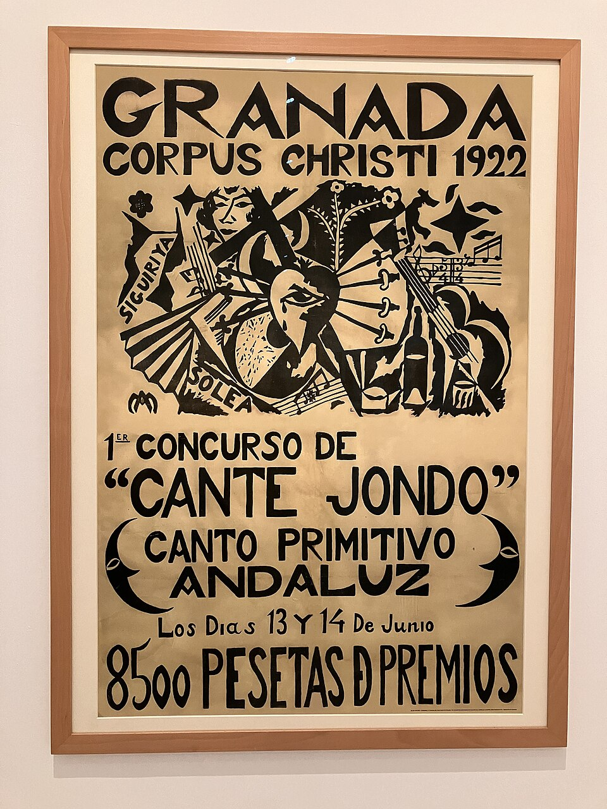
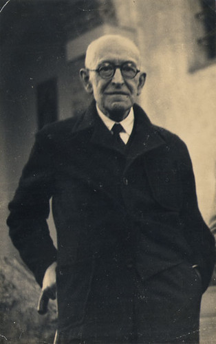

Manuel de Falla i El amor brujo
Copia i respon
Copia el títol «Manuel de Falla i El amor brujo». Després, per a cada paràgraf (¶1 a ¶4): copia'l sencer i, a sota, respon les seves preguntes amb frases completes. No cal copiar els peus de foto.
- cant jondo
- cant flamenc antic i profund d'Andalusia
- cantaora
- dona que canta flamenc
- trinat
- alternança molt ràpida entre dues notes veïnes
- foguera
- foc gran que es fa a terra, a l'aire lliure
- exiliar-se
- marxar del teu país, normalment obligat per la política o una guerra

Manuel de Falla (Cadis, 1876 – Alta Gracia, Argentina, 1946) és un dels compositors espanyols més importants del segle XX. De petit va aprendre piano amb la seva mare i, de jove, es va traslladar a Madrid per continuar estudiant. El 1907 se'n va anar a viure a París, on va conèixer Debussy, Ravel i Dukas, que el van ajudar a trobar la seva pròpia veu. Quan va tornar a Espanya, el 1914, tenia una idea clara: fer una música moderna que naixés de les arrels populars, sobretot del flamenc i del cant jondo andalús. No volia copiar les cançons tradicionals, sinó capturar-ne l'esperit.
- On i en quin any va néixer Manuel de Falla?
- A quina ciutat se'n va anar a viure el 1907? Quins tres compositors hi va conèixer?
- De quina música popular volia partir Falla per fer la seva música?

L'any 1915 va estrenar a Madrid El amor brujo, una obra per a cantaora i petita orquestra que més tard, el 1925, va convertir en ballet. Explica la història de Candela, una gitana perseguida pel fantasma gelós del seu antic amant, que se li apareix cada vegada que vol estimar el Carmelo. Per espantar l'esperit, Candela balla de nit al voltant d'una foguera: és la cèlebre «Dansa ritual del foc», amb trinats nerviosos que imiten les flames i un ritme obstinat que sembla un encanteri. Al final, la seva amiga Lucía distreu el fantasma, i Candela i el Carmelo es poden fer el petó que trenca la maledicció.
- En quin any es va estrenar El amor brujo? En què la va convertir el 1925?
- Com es diu la protagonista? Qui la persegueix?
- Què fa Candela per espantar l'esperit? Què imiten els trinats?
La música d'El amor brujo barreja dos mons. D'una banda hi ha l'orquestra clàssica, amb violins, flautes, trompetes i piano; de l'altra, el so del flamenc: la veu esquinçada de la cantaora, ritmes que recorden les palmes i melodies plenes d'ornaments, com les del cant jondo. A més de la «Dansa ritual del foc», l'obra té altres números famosos, com la «Cançó del foc fatu», que compara l'amor amb una llum que apareix i s'escapa, o la «Pantomima», lenta i misteriosa. Després d'aquesta obra, Falla va compondre Noches en los jardines de España i El sombrero de tres picos, i es va convertir en el gran compositor del nacionalisme musical espanyol.
- Quins dos mons barreja la música d'El amor brujo?
- A més de la «Dansa ritual del foc», quins altres dos números famosos té l'obra?
- Quines dues obres va compondre Falla després d'El amor brujo?

El 1922, Falla va organitzar a Granada, amb el poeta Federico García Lorca, un famós concurs de cant jondo per salvar aquest art de l'oblit. Després de la Guerra Civil, trist i malalt, es va exiliar a l'Argentina, on va morir sense tornar mai a Espanya. La seva música, però, no ha deixat de viatjar: El amor brujo ha tingut versions de tota mena, de la guitarra de Paco de Lucía al jazz de Miles Davis o el cinema de Carlos Saura. Cada versió canvia l'instrument, l'estil o la imatge, però conserva el mateix foc.
- Amb quin poeta va organitzar Falla el concurs de cant jondo? A quina ciutat?
- On va morir Falla? Per què hi era?
- Escriu dues de les versions d'El amor brujo que diu el text.

